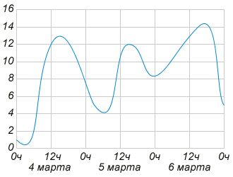
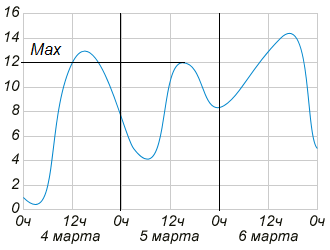
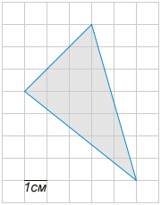
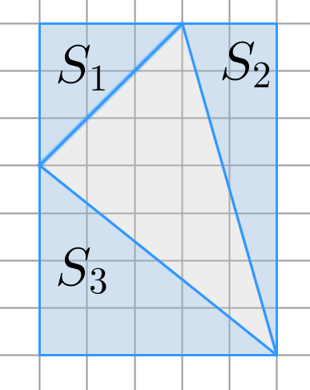
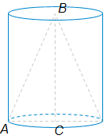
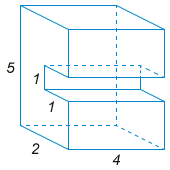
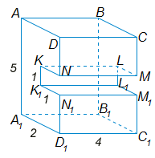

| Поиск | Почта | Карты | Маркет | Новости | Словари | Блоги | Видео | Картинки | ещё |
| Выход | |
|
|
| |||||||||||||||||||||||
ЕГЭ по математике. Вариант 5
1 из 14
Вопрос B1
В школе 23 восьмиклассника изучают французский язык, что составляет 20% от числа всех восьмиклассников.
Сколько учеников 8 классов учится в школе?
Вы пропустили вопрос. Правильно: 115
23 восьмиклассника составляют Всего учеников восьмого класса в школе
2 из 14
Вопрос B2
На рисунке изображён график изменения температуры воздуха на протяжении трёх дней. По горизонтали указывается дата и время суток, по вертикали — значение температуры в градусах Цельсия. 
Определите по рисунку, какой была наибольшая температура воздуха 5 марта. Ответ дайте в градусах Цельсия.
Вы пропустили вопрос. Правильно: 12  На рисунке ограничена часть графика, соответствующая изменению температуры воздуха 5 марта. 12 градусов Цельсия --- наибольшая температура воздуха в этот день.
3 из 14
Вопрос B3
На клетчатой бумаге с размером клетки 1 см х 1 см (см. рис.) изображён треугольник. Найдите его площадь (в квадратных сантиметрах). 
Вы пропустили вопрос. Правильно: 13,5
Достроим треугольник до прямоугольника (см. рисунок). 
4 из 14
Вопрос B4
Библиотеке для изготовления книжных полок требуется заказать 52 одинаковых стекла в одной из трех фирм. Площадь каждого стекла 0,25
Сколько рублей будет стоить самый дешевый заказ?
Вы пропустили вопрос. Правильно: 8840
Требуется заказать Составим таблицу.
Самый дешевый заказ будет стоить 8840 рублей.
5 из 14
Вопрос B5
Решите уравнение
Вы пропустили вопрос. Правильно: 4,75
6 из 14
Вопрос B6
В прямоугольном треугольнике гипотенуза равна 5, синус одного из острых углов равен
Найдите прилежащий к этому углу катет.
Вы пропустили вопрос. Правильно: 1,4
Пусть в треугольнике .png) По определению По теореме Пифагора:
7 из 14
Вопрос B7
Найдите значение выражения
Вы пропустили вопрос. Правильно: 5
8 из 14
Вопрос B8
Найдите точку касания прямой
Вы пропустили вопрос. Правильно: -2
Уравнение касательной имеет вид Вычислим значения функции при найденных значениях Итак, на графике функции есть две точки, в которых производная равна Прямая
9 из 14
Вопрос B9
Конус с образующей равной 13 вписан в цилиндр с диаметром основания равным 10. 
Найдите высоту цилиндра.
Вы пропустили вопрос. Правильно: 12
Рассмотрим треугольник  По теореме Пифагора:
10 из 14
Вопрос B10
Петя бросает игральный кубик. С какой вероятностью на верхней грани выпадет четное число?
Вы пропустили вопрос. Правильно: 0,5
При броске кубика на верхней грани может выпасть любое из Из них четных три числа: Вероятность того, что на верхней грани выпадет четное число, равна
11 из 14
Вопрос B11
Найдите площадь поверхности многогранника, изображённого на рисунке (все двугранные углы прямые). 
Вы пропустили вопрос. Правильно: 82 
12 из 14
Вопрос B12
После дождя уровень воды в колодце может повыситься. Коля бросает небольшие камешки в колодец, измеряя время их падения, и рассчитывает расстояние до воды по формуле
На сколько поднялся уровень воды после дождя, если измеряемое время уменьшилось на 0,2 с? Ответ выразите в метрах.
Вы пропустили вопрос. Правильно: 3
До дождя камушки долетали до воды за После дождя камушки стали долетать до воды за Уровень воды поднялся на
13 из 14
Вопрос B13
Теплоход плывет из города А в расположенный на расстоянии 384 км ниже по течению реки город В. Простояв 8 часов в городе В, он возвращается обратно. На весь путь теплоход затрачивает 48 часов.
Найдите скорость теплохода в неподвижной воде, если скорость течения равна 4 км/ч. Ответ дайте в км/ч.
Вы пропустили вопрос. Правильно: 20
Пусть Тогда Из пункта A в пункт B теплоход плывет со скоростью По условию задачи известно, что в на весь рейс теплоход затрачивает 48 часов, с учетом восьмичасовой стоянки в пункте B. Составим уравнение. Скорость теплохода в неподвижной воде выражается положительным числом, следовательно, равна
14 из 14
Вопрос B14
Найдите наибольшее значение функции
Вы пропустили вопрос. Правильно: 23
Найдем критические точки функции Вычислим значения функции в концах отрезка Наибольшее значение функции
Попробуйте еще раз. Варианты:
Демонстрационный вариант теста ЕГЭ по математике 2013 года содержит только одну из двух частей экзаменационной работы. Задания могут отличаться от реальных. |
| Задания по математике подготовлены по заказу Яндекса в соответствии с требованиями Министерства образования и науки Российской Федерации к проведению Единого государственного экзамена в 2013 году. | © 2010—2013 «Яндекс» |
 Затрачено времени: менее минуты
Затрачено времени: менее минуты